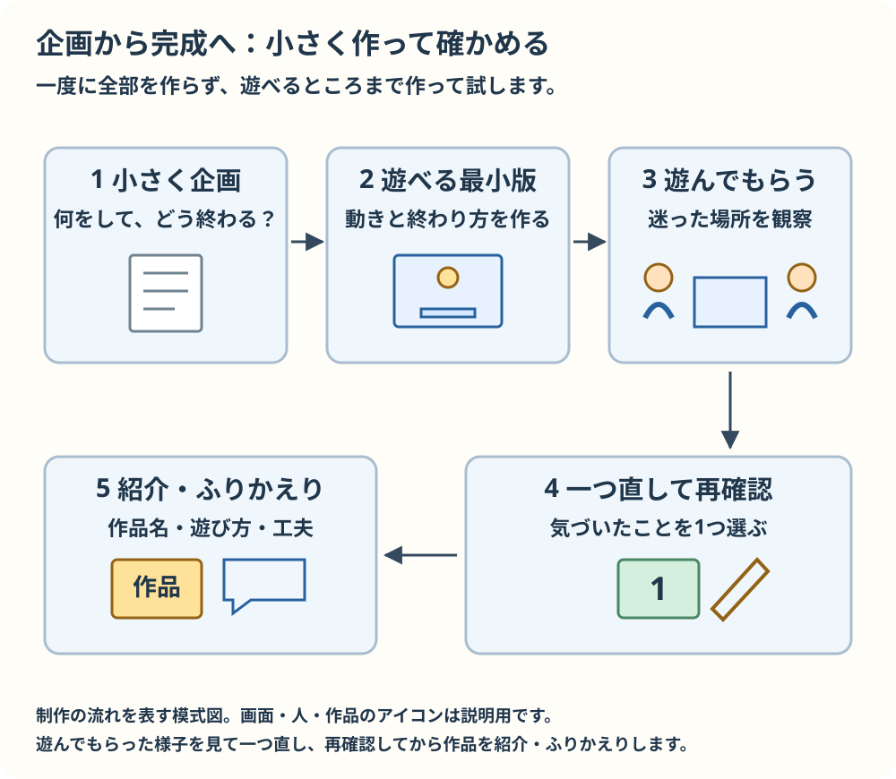

企画から完成まで
はじめは小さく作り、遊んで確かめてから広げます。下のシートは印刷して書き込めます。ブラウザーの印刷機能を使ってください。
企画シート
作品名：________________________________________
誰が（プレイヤー）：________________________________________
何をする：________________________________________
何で終わる／クリアする：________________________________________
最小の完成（これだけで遊べる）：________________________________________
必要な機能と参考にする教材：________________________________________
後で入れたいこと：________________________________________
作る順番

最初は、短く遊べる小さな完成を目指します。友達に遊んでもらい、迷った場所を見て一つ直しましょう。もう一度確かめたら、作品名・遊び方・工夫を紹介します。
遊んでもらった記録
遊んでもらった版と日付：________________________________________
見て気づいたこと：________________________________________
直すことを一つ：________________________________________
直した後、もう一度試した結果：________________________________________
遊びやすさ
操作方法、目標、残り時間や得点を画面で分かるようにします。色だけで区別せず、文字・形・位置など別の手掛かりも付けましょう。文字の大きさ、見やすい色の差、押しやすい操作、やり直し方も友達と確かめます。
渡す・紹介する・ふりかえる
index.html、style.css、script.jsと使ったassetsをフォルダーごと渡します。別の場所にコピーしてindex.htmlを開き、画像や音も動くか確かめます。素材を使う前に、配布や改変の条件、作者名の表示が必要かを素材ごとに確認します。
作品名、遊び方、工夫したことを短く紹介しましょう。うまくいったこと、難しかったこと、次に試したいことを書きます。ブラウザー公開やGitHubアカウントの作成は必須ではありません。
作品紹介とふりかえり
作品名・遊び方：________________________________________
工夫したこと：________________________________________
できたこと・難しかったこと：________________________________________
次に試したいこと：________________________________________
教える人へ
到達目標は、3ファイルを扱い、値や条件を変えて結果を確かめ、自分の小さなゲームを完成させることです。つまずいたら、開いているフォルダー、保存と再読み込み、画面とConsoleのメッセージを一緒に確かめ、答えをすぐ渡さず次の一歩を尋ねてください。